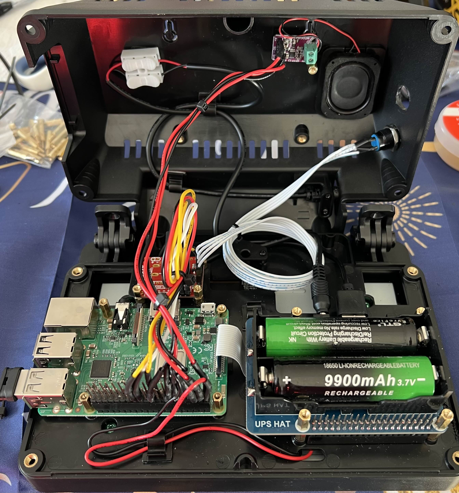

Projects

Kin:pathic Visual Timer
Developed a child-friendly visual timer using Python and Pygame. The application uses personalized images to help children understand the passage of time.
Python • Pygame • Raspberry Pi
View Project →


Digital Inventory Tracking Tool
Designed an inventory management application to monitor ingredient usage, stock levels, and automate reorder notifications.
Python • Inventory Management